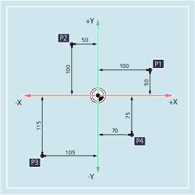
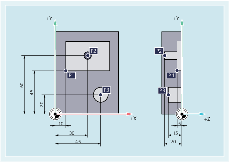

Die Achsen im Koordinatensystem sind vermaßt. Dadurch ist es möglich, jeden Punkt im Koordinatensystem und damit jede Werkstück-Position durch die Richtung (X, Y und Z) und drei Zahlenwerte eindeutig zu beschreiben. Der Werkstück-Nullpunkt hat immer die Koordinaten X0, Y0 und Z0.
Positionsangaben in Form kartesischer Koordinaten
Der Einfachheit halber betrachten wir bei dem folgenden Beispiel nur eine Ebene des Koordinatensystems, die X/Y-Ebene:
Die Punkte P1 bis P4 besitzen folgende Koordinaten:
Position | Koordinaten |
|---|---|
P1 | X100 Y50 |
P2 | X-50 Y100 |
P3 | X-105 Y-115 |
P4 | X70 Y-75 |
Beispiel: Werkstück-Positionen beim Drehen
Bei Drehmaschinen genügt eine Ebene, um die Kontur zu beschreiben:

Die Punkte P1 bis P4 besitzen folgende Koordinaten:
Position | Koordinaten |
|---|---|
P1 | X25 Z-7.5 |
P2 | X40 Z-15 |
P3 | X40 Z-25 |
P4 | X60 Z-35 |
Beispiel: Werkstück-Positionen beim Fräsen
Bei Fräsbearbeitungen muss auch die Zustelltiefe beschrieben werden, d. h., es muss auch der dritten Koordinate (in diesem Fall Z) ein Zahlenwert zugeordnet werden.
Die Punkte P1 bis P3 besitzen folgende Koordinaten:
Position | Koordinaten |
|---|---|
P1 | X10 Y45 Z-5 |
P2 | X30 Y60 Z-20 |
P3 | X45 Y20 Z-15 |